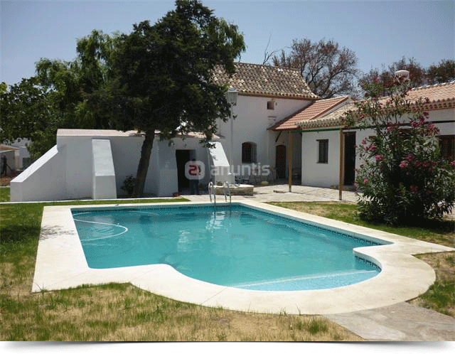

Molino Badalejos, vacaciones en el sur de cádiz
Un precioso molino antiguo restaurado y reconvertido en una casa rural. Situada en un
magnífico valle perfectamente comunicado con toda la costa de la provincia de Cádiz. Un lugar perfecto para conocer
Tarifa, Las playas de los Caños de Meca, Barbate, Conil y hermosa ciudad de Cádiz.

El molino consta de 5 habitaciones dobles independientes, ideales
tanto en temporada de invierno como de verano ya que todas ellas están dotadas de chimenea y piscina. Esto
permite que la estancia sea agradable en cualquier época del año.
A pocos metros se encuentra la Venta del Casaron, una combinación perfecta de calidad y autenticidad
para los paladares más exigentes.
Venta el Casarón, la cocina del campo
Situado a 100 metros del molino, un lugar singular tanto por su estética como por su cocina.

Ubicado en una casa construida como las tradicionales de la zona con gruesos muros de piedra y techo realizado con cañas. Cuenta con un salón interior, presidido por una chimenea y dos terrazas, una cubierta y otra en un patio rodeada de cesped además una zona de visita al huerto y a la granja
La cocina es muy singular y se aparta de la habitual en las ventas. Así hay una curiosa mezcla entre cocina internacional, cocina gallega y cocina autóctona fruto del ingenio y la sapiencia de Enrique Torres, un marino e ingeniero que decidió convertir en su profesión su afición de toda la vida, la cocina.
De que todo salga bien en los comedores se encarga su socio Pedro Cepero, un magnífico
maestro de ceremonias que, además, cultiva, en la trasera de la venta verduras y gallinas
que luego servirán para elaborar los singulares platos de Enrique.
Recomendamos: Empanadas al estilo gallego de sardinas o de chipirones, costillas
de ternera en salsa con su fritá de papas, huevos salvajes, sopa de tomate y setas, croquetas de
carne con guarnición de tomate de frito, callos con garbanzos, pollo mejicano, surtido de postres de
la casa y tarta de manzana y ciruela. Venta Casarón es un restaurante basado en una mezcla de recetas
Gallegas y Gaditanas donde la base fundamental de su cocina es los productos de alta calidad
Alrededores

Medina Sidonia
Galardonada con el premio al Embellecimiento de los Pueblos Andaluces, y declarada Conjunto Histórico Artístico y Bien de Interés Cultural en el año 2001.
Reconocida por la belleza de sus características calles blancas, el enrejado de sus balcones y ventanas, por sus apreciados, genuinos y deliciosos dulces artesanos y por su rica gastronomía. Medina Sidonia es una de las poblaciones históricas y monumentales más importantes de la provincia de Cádiz.
Cádiz
Con 3.000 años de historia, es la capital más meridional de Europa. Ciudad marinera y llena de luz. Las Murallas de las "Puertas de Tierra", separan claramente la parte moderna de la antigua; ésta de calles estrechas, pequeñas plazas y lugares de gran tipismo, como "La Viña", antiguo barrio de pescadores donde puede degustarse el famoso "pescaíto frito"; como los barrios del "Mentidero" o "Santa María", verdadera sede del cante flamenco; como la Plaza de San Juan de Dios, o como el barrio de "El Pópulo" antigua villa medieval


Vejer de la Frontera
Vejer se encuentra situada al Sur Oeste de la provincia de Cádiz. La ciudad se halla edificada sobre un cerro que, cortado por el río Barbate, desciende hacia el mismo en acusada pendiente, a la que debe la población unas fantásticas vistas. Cuenta a tan solo 9 Km. del núcleo urbano con una magnífica playa conocida como “Playa de El Palmar”. Situada en la Costa de la Luz, en una larga y abierta franja del Atlántico sumergiéndose en el océano por los cabos de Trafalgar y Roche. Sus arenas finas, sus aguas transparentes rodeada por un entorno natural ha contribuido a que esta playa sea una de las pocas playas vírgenes de la zona.
Ruta de la costa
Muchos son los atractivos a sumar a los 200 km. de la más fina y dorada arena de la península. Conil, típico pueblo de pescadores de antigua tradición marinera, tiene 14 km. de playas de finas y cálidas arenas: los Bateles, la Fontanilla, Fuente del Callo y las Calas de Roche. Barbate fue antiguo puerto pesquero ya desde época romana y a su alrededor vio crecer un pueblo blanco, luminoso y de gran interés turístico. Posee magnificas playas como la del Carmen, la de Yerbabuena y sobre todo la de Caños de Meca, con altos acantilados de casi cien metros y manantiales de agua dulce. Junto al faro destacan las ruinas del antiguo Castillo de Santiago.

Prevision tiempo Medina-Sidonia
Síguenos
Alojamiento y comida
Ctra. Laujar-Orgiva Km. 1.6, Laujar de Andarax
Almería - Andalucía - España
Tel: 950 513 514
Fax: 950 513 561
info@hotelalmirez.es